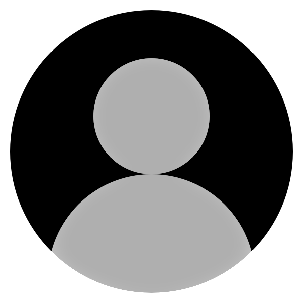

<!-- Hello {{name}} !! Welcome to the Nav, you are logged in through google -->
<div class="container-fluid main">
     <mat-toolbar class="navbar navbar-expand-lg navbar-dark " >
        <div>
            <a class="sidenav-button"><i class="fas fa-bars fa-xls" aria-hidden="true" (click)="sideNav.toggle()"></i></a>
            <a class="navbar-brand">NouveauTracker</a>
        </div>
        <div>
            <div class="collapse navbar-collapse" id="navbarNavDropdown">
                <ul class="navbar-nav ml-auto">
                    <!-- <li><a><i class="fa-solid fa-bell"></i></a></li> -->
                    <li class="nav-item dropdown">
                        <a *ngIf="true" [matMenuTriggerFor]="menu" class="nav-link dropdown-toggle username"  id="navbarDropdownMenuLink">
                            <div class="photo">
                                
                                
                            </div>
                            {{employee?.employeeName}}
                        </a>
                        <mat-menu #menu="matMenu">
                            <!-- update profile image feature here -->
                            <button mat-menu-item routerLink="/home/profile">    
                                Profile
                            </button>
                            <button mat-menu-item routerLink="/" (click)="logout()">
                                Logout
                            </button>
                          </mat-menu>
                    </li>
                </ul>
            </div>
        </div>  
    </mat-toolbar>

    <mat-sidenav-container >
        <mat-sidenav #sideNav opened mode="side" [fixedInViewport]="true" >
            <app-side-nav></app-side-nav>
        </mat-sidenav>
        <mat-sidenav-content >
            <router-outlet></router-outlet>
        </mat-sidenav-content>
    </mat-sidenav-container>
</div>


